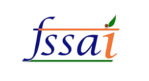
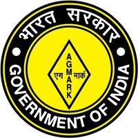
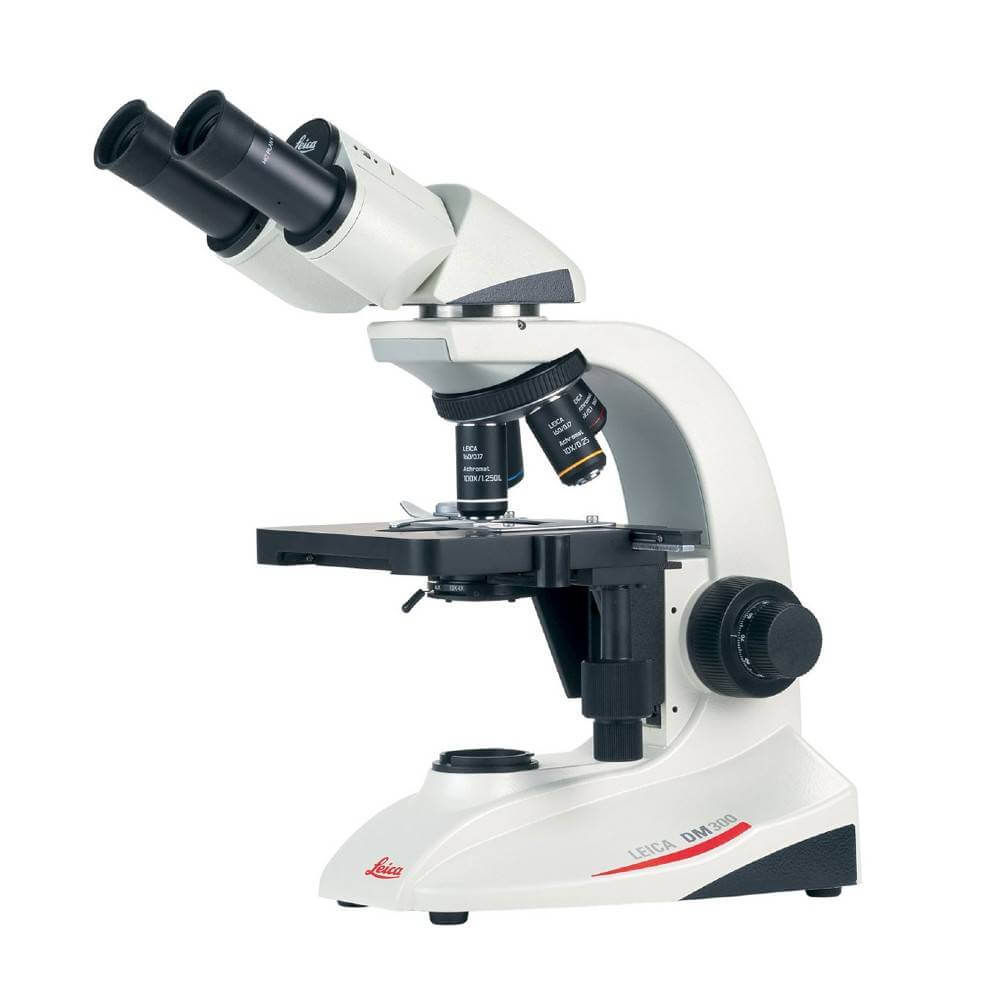
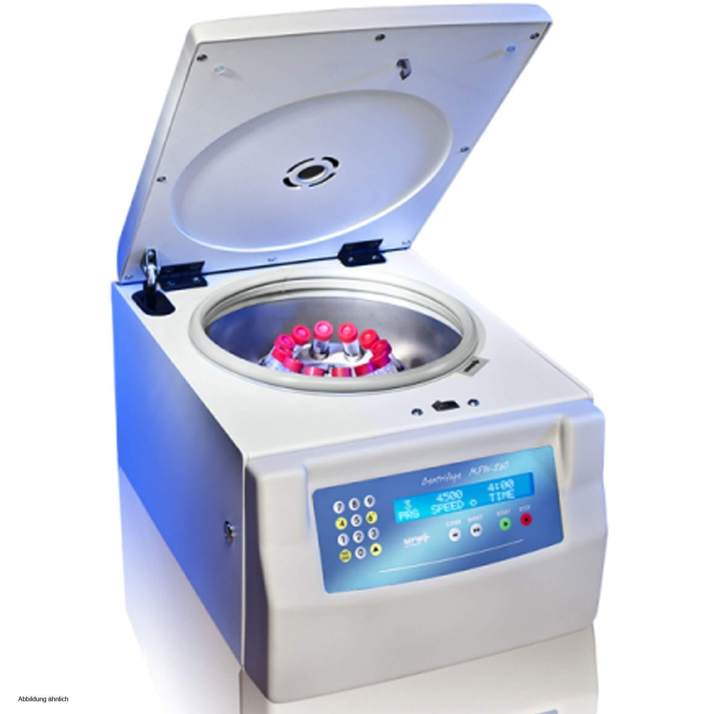

Scientific Instrument Supplier & Laboratory Consultancy
Precision instruments, quality lab chemicals, and regulatory compliance consulting across India.
Empowering research centers, educational institutes, and food testing laboratories with top-tier scientific hardware, seamless laboratory installations, and expert consultancy for FSSAI, AGMARK, and NABL certifications.
About Precisian Scientific
Based in West Bengal, Precisian Scientific is a trusted, MSME-registered scientific equipment supplier. We specialize in catering to educational laboratory requirements, high-end research projects, and demanding industrial testing labs with state-of-the-art laboratory glassware, precise instruments, and standard lab chemicals.
In addition to hardware, we function as a premier compliance consultancy. Our experienced consultants provide end-to-end guidance for FSSAI state & central licensing, AGMARK quality certification, NABL accreditation, and food safety audits, ensuring your business stays aligned with the latest national regulations.
We are committed to fostering laboratory modernization and calibration excellence. By combining high-grade instruments with robust consulting services, we help Indian laboratories set up reliable operations that meet the highest regulatory testing benchmarks.
Our Services

FSSAI Consulting
Navigate the complexities of food safety licensing. We offer step-by-step assistance for Central and State FSSAI licenses, audit preparation, hygiene ratings, and regulatory safety compliance for food testing laboratories and production facilities.

AGMARK Certification
Accelerate your product grading mark approval. We provide full planning and compliance liaison for agricultural goods, including specialized mustard oil testing laboratory setup, equipment selection, and documentation filing.
NABL Accreditation
Secure credibility for your laboratory. Our experts support ISO/IEC 17025 implementation, quality control guidelines, measurement calibration procedures, standard documentation, and preparation for assessment audits.
Product Showcase

Microscope
Pipette

Centrifuge
Looking for other equipment? We provide spectrophotometers, balances, lab glassware, quality lab chemicals, and customized laboratory furniture. Contact us for a custom quotation!
Industries We Serve
Our Process
-
Requirement Consultation
We discuss your laboratory setup objectives, testing scope (such as mustard oil testing or academic syllabus requirements), and targeted certifications.
-
Infrastructure Planning
We layout physical requirements, safety features, placement of lab furniture, utility hookups, and optimal workflow patterns.
-
Equipment Procurement
Our team sources matching precision instruments, lab glassware, and standard lab chemicals customized to your budget.
-
Installation & Calibration
Qualified technicians complete physical installation, verify electrical parameters, and perform initial testing calibration support.
-
Compliance & Licensing Support
We assist with documentation, standard operating procedures, and final audits for FSSAI, AGMARK, or NABL certification.
Why Choose Us
Contact Us
Whether you need specific scientific instruments, lab chemicals, lab furniture planning, or expert FSSAI, AGMARK, or NABL certification consulting — our experts are here to guide you.